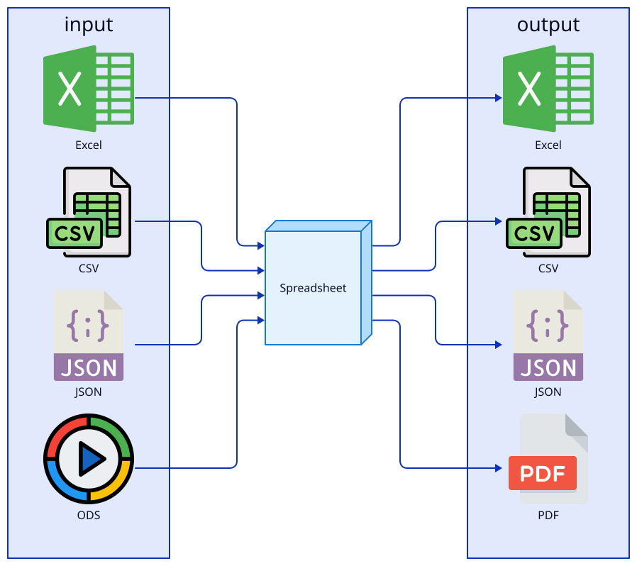

Format Handlers
Format handlers are a key component of Derafu Spreadsheet that enable the library to work with different file formats. Each format handler implements the FormatHandlerInterface and knows how to read and write a specific format.
- Supported Formats
- How Format Handlers Work
- Using Format Handlers
- Format-Specific Options
- Custom Format Handlers
- Format Detection
- Alternative Format Handlers
- Format Handling and Type Casting
Supported Formats

Derafu Spreadsheet supports the following formats in the core package:
| Format | Extension | Handler Class | Dependencies |
|---|---|---|---|
| Excel XLSX | .xlsx | XlsxHandler |
PhpSpreadsheet |
| Excel XLS | .xls | XlsHandler |
PhpSpreadsheet |
| OpenDocument | .ods | OdsHandler |
PhpSpreadsheet |
| CSV (League) | .csv | CsvLeagueHandler |
League/CSV |
| CSV (PhpSpreadsheet) | .csv | CsvPhpSpreadsheetHandler |
PhpSpreadsheet |
| JSON | .json | JsonHandler |
PHP built-in |
| XML | .xml | XmlHandler |
PHP built-in |
| YAML | .yaml | YamlHandler |
Symfony/Yaml |
| HTML | .html | HtmlHandler |
PhpSpreadsheet |
PdfHandler |
PhpSpreadsheet + PDF renderer |
How Format Handlers Work
Each format handler is responsible for:
- Loading data from a file into a
SpreadsheetInterfaceobject. - Dumping data from a
SpreadsheetInterfaceobject to a file or string (memory). - Providing metadata like the file extension and MIME type.
The Factory class manages the format handlers and automatically selects the appropriate handler based on the file extension.
Using Format Handlers
Most of the time, you don’t need to interact with format handlers directly. The Loader and Dumper classes handle this for you:
$loader = new Loader();
$spreadsheet = $loader->loadFromFile('data.xlsx');
$dumper = new Dumper();
$dumper->dumpToFile($spreadsheet, 'output.csv');
However, if needed, you can access format handlers directly through the Factory:
$factory = new Factory();
$xlsxHandler = $factory->createFormatHandler('filepath.xlsx');
// or with explicit format
$csvHandler = $factory->createFormatHandler('filepath.file', 'csv');
Format-Specific Options
Some format handlers support additional options in the constructor.
CSV Options (CsvLeagueHandler)
$csvHandler = new CsvLeagueHandler(
delimiter: ',', // Column delimiter.
enclosure: '"', // Field enclosure character.
escape: '\\', // Escape character.
sheetName: 'Sheet' // Default sheet name when loading CSV.
);
OpenDocument/Excel Options (OdsHandler, XlsHandler, XlsxHandler)
$xlsxHandler = new XlsxHandler(
readDataOnly: true // Read values only, ignore formatting.
);
PDF Options (PdfHandler)
$pdfHandler = new PdfHandler(
writerType: 'Mpdf' // Can be 'Mpdf', 'Dompdf', or 'Tcpdf'.
);
JSON Options (JsonHandler)
$jsonHandler = new JsonHandler(
encodeOptions: JSON_PRETTY_PRINT | JSON_UNESCAPED_UNICODE,
decodeOptions: JSON_OBJECT_AS_ARRAY,
depth: 512,
sheetName: 'Sheet'
);
YAML Options (YamlHandler)
use Symfony\Component\Yaml\Yaml;
$yamlHandler = new YamlHandler(
parseFlags: Yaml::PARSE_EXCEPTION_ON_INVALID_TYPE,
dumpFlags: Yaml::DUMP_MULTI_LINE_LITERAL_BLOCK,
sheetName: 'Sheet'
);
Custom Format Handlers
You can create your own format handlers by implementing the FormatHandlerInterface:
use Derafu\Spreadsheet\Contract\FormatHandlerInterface;
class MyCustomHandler implements FormatHandlerInterface
{
// Implement required methods.
}
// Register with the factory.
$factory = new Factory();
$factory->registerFormatHandler('custom', MyCustomHandler::class);
// Now you can use it.
$loader = new Loader($factory);
$spreadsheet = $loader->loadFromFile('filepath.custom');
Format Detection
The Factory class detects the format based on the file extension. If the file doesn’t have an extension or if you want to override it, you can explicitly specify the format:
$loader = new Loader();
$spreadsheet = $loader->loadFromFile('filepath', 'xlsx'); // Treat as XLSX.
You can also check which formats are supported:
$factory = new Factory();
$supportedFormats = $factory->getSupportedFormats();
// ['csv', 'xlsx', 'xls', 'ods', 'xml', 'json', 'yaml', 'html', 'pdf']
Alternative Format Handlers
For some formats like CSV, Derafu Spreadsheet provides multiple handlers. For example:
CsvLeagueHandler- Uses League/CSV (recommended for most cases).CsvPhpSpreadsheetHandler- Uses PhpSpreadsheet.
You can choose which handler to use by registering it for the format:
$factory = new Factory();
$factory->registerFormatHandler('csv', CsvPhpSpreadsheetHandler::class);
$loader = new Loader($factory);
// Now CSV files will use PhpSpreadsheet handler.
Format Handling and Type Casting
When loading a file, the process works like this:
- Format handler reads the raw data from the file.
- Data is converted to a
SpreadsheetInterfaceobject. Casterprocesses all values to convert them to the appropriate PHP types.
When saving a file:
Casterconverts PHP types to appropriate string representations.- Format handler writes the data to the file in the correct format.